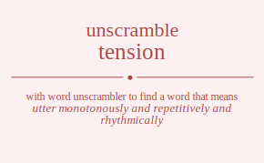

The word found after unscrambling tension means that utter monotonously and repetitively and rhythmically, recite with musical intonation; recite as a chant or a psalm, speak carefully, as with rising and falling pitch or in a particular tone, .
